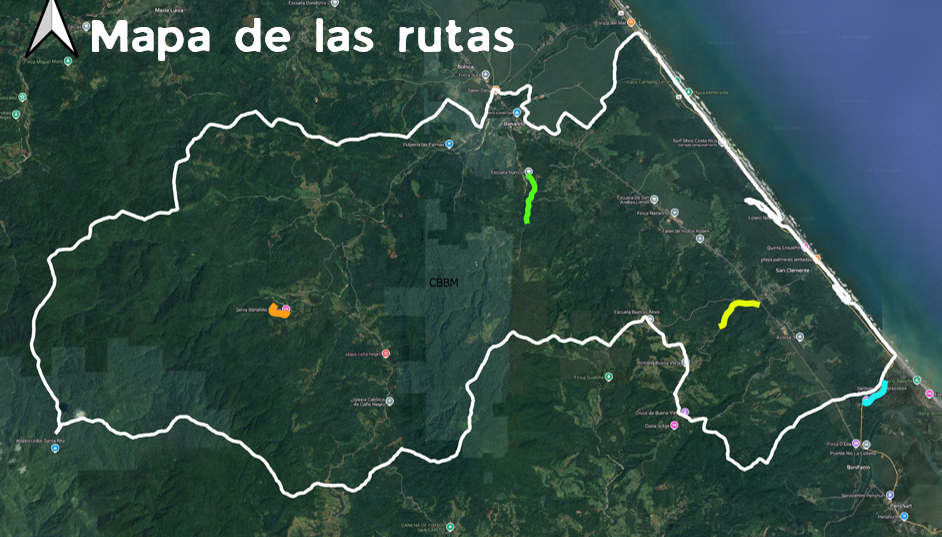

Mapa de las rutas
Visualización de las rutas y áreas de interés del corredor biológico.
Leyenda
- Puntos de Observación de Aves
- Senderos Principales
- Áreas de Conservación
- Instalaciones

Puntos de Interés
Punto de Observación 1
Descripción del punto de observación y las especies que se pueden avistar aquí.